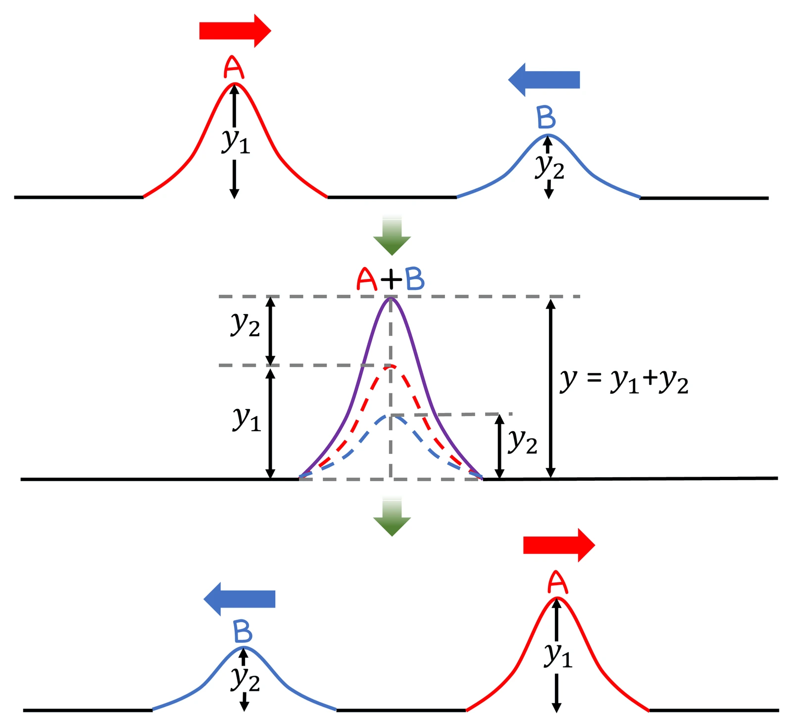

고2 물리학 · Ⅲ 빛과 물질 · 웹툰 13화 「비눗방울의 무지개」
이중 슬릿으로 빛의 파장 재기 — 빛 더하기 빛이 어둠이 될 수도
실험에서 레이저 색(빨강 632.8 · 초록 532 · 보라 405 nm), 슬릿 간격 d(0.20~0.50 mm), 스크린 거리 L을 바꿔 가며 밝은 무늬 7개 양 끝 거리를 자로 재고 파장을 구했습니다. 무늬 간격은 파장과 L에 비례, d에 반비례했고 Δy·d ÷ L로 파장이 수 % 오차로 나왔습니다. 빛의 중첩·간섭과 영의 실험을 정리합니다.
- 웹툰 13화
- 실험: 무늬 간격 재기
- 과학 원리
- 자습 노트
- 15 광전 효과
실험에서 얻은 것
실험 데이터 되짚기
슬릿 하나의 폭 0.04 mm, 작은 각 근사(L ≫ d). L = 1.0 m 기준입니다.
| 레이저 | d | Δy | 밝은 무늬 7개 양 끝 (6칸) | 역산 λ = (양 끝 ÷ 6)·d ÷ L |
|---|---|---|---|---|
| 빨강 632.8 nm | 0.25 mm | 2.53 mm | 15.2 mm | 633 nm |
| 초록 532 nm | 0.25 mm | 2.13 mm | 12.8 mm | 532 nm |
| 보라 405 nm | 0.25 mm | 1.62 mm | 9.7 mm | 405 nm |
| 빨강 632.8 nm | 0.50 mm | 1.27 mm | 7.6 mm | 633 nm |
| 빨강 632.8 nm | 0.20 mm | 3.16 mm | 19.0 mm | 633 nm |
파장이 길수록, 슬릿 거리가 멀수록, 슬릿 간격이 좁을수록 무늬가 넓어집니다. 수백 nm의 파장을 mm 단위 자로 잴 수 있습니다. 역산한 파장이 조금씩 다른 것은 자의 눈금(0.5 mm)과 6칸을 재는 방법의 차이에서 생깁니다.
개념 정리
1. 이중 슬릿 간섭으로 파장 재기
두 슬릿을 지난 빛은 두 파원처럼 퍼져 스크린에서 만납니다. 두 경로의 경로차가 파장의 정수배(mλ)이면 마루끼리 만나 밝은 무늬(보강 간섭), 반정수배이면 상쇄되어 어두운 무늬(상쇄 간섭)가 생깁니다(영의 실험, 1801 — 빛의 파동성 증거). 슬릿 간격 d, 스크린 거리 L(≫ d)일 때 밝은 무늬 사이 간격은 Δy = λL ÷ d. 무늬 간격을 자로 재면 파장(수백 nm)을 mm 단위 측정으로 구할 수 있습니다. 단일 슬릿 회절(슬릿 폭 a)의 넓은 봉우리가 간섭 무늬의 밝기 껍질을 만들어 바깥 무늬는 점점 어두워지고 d/a 배수의 무늬는 사라집니다.
움직여 보기
이중 슬릿 — 색·슬릿 간격·거리를 바꿔 무늬 간격 재기
P를 옮기며 경로차가 파장의 정수배일 때 밝고 반정수배일 때 어두운지 확인해 보세요. 빨강·0.25 mm·1 m면 Δy = 2.53 mm(표 1과 같음). 위 장치 그림은 d를 크게 과장했고, 아래 무늬와 그래프는 실제 크기(mm) 비율입니다. 슬릿 폭 0.04 mm의 회절 때문에 바깥 무늬가 점점 어두워집니다.
2. 파동의 중첩과 간섭을 쓰는 기술 (웹툰 13화)
두 파동이 만나면 변위가 더해집니다(중첩). 마루와 마루가 만나면 높이가 2배(보강), 마루와 골이 만나면 평평(상쇄), 만난 뒤 두 펄스는 원래 모양 그대로 지나갑니다. 비눗방울의 무지개는 비누막 바깥면과 안쪽면에서 반사된 빛이 겹쳐 생기는 색이고, 안경·카메라 렌즈의 무반사 코팅은 얇은 막 윗면과 아랫면에서 반사된 빛이 상쇄 간섭을 일으켜 반사를 줄이며, 지폐의 홀로그램은 간섭 무늬를 기록해 입체 영상을 보여 주고, 노이즈 캔슬링 이어폰은 소음과 반대 모양의 소리로 상쇄 간섭을 일으킵니다.
교재 그림
중첩 원리 — 겹칠 때는 더하고, 지나가면 그대로

겹친 순간의 변위는 y = y₁ + y₂(보라 실선). 만난 뒤 A와 B는 서로 영향을 받지 않고 원래 모양·방향 그대로 지나갑니다.
움직여 보기
두 펄스가 만나면 — 보강과 상쇄
두 펄스가 겹치는 순간 줄의 변위는 두 변위의 합입니다. 마루+마루는 2칸(보강), 마루+골은 0(상쇄) — 그리고 지나간 뒤 두 펄스는 원래 모양 그대로 제 갈 길을 갑니다. 시간 막대로 겹치는 순간을 멈춰 보세요.
교재 그림
무반사 코팅 — 두 반사광의 상쇄 간섭

코팅 윗면에서 반사된 빛과 아랫면(렌즈 경계)에서 반사된 빛이 마루와 골로 만나 서로 지워지므로 반사가 줄어듭니다 — 위 '마루 + 골'과 같은 원리입니다.
3. 모형과 실제, 생활 속에서
L ≫ d, y ≪ L인 작은 각 근사입니다. 무늬가 스크린 중심에서 멀어지면 sinθ ≠ tanθ라 간격이 조금 넓어집니다. 실제로는 슬릿 간격 d의 제작 오차(±5 %), 자 읽기 오차(0.5 mm), 레이저 빔 퍼짐 때문에 파장이 몇 % 오차로 나오고, 레이저 대신 백색광을 쓰면 색이 겹쳐 무지개 무늬가 됩니다. CD·DVD 표면의 무지개색, 기름막의 색이 빛의 간섭이며, 전자·중성자로도 같은 이중 슬릿 무늬가 생겨 물질의 파동성을 보여 줍니다(15화).
경로차 = mλ 밝음, (m + ½)λ 어두움 · a = 0.04 mm · 632.8 nm·0.25 mm·1 m → 2.53 mm
“13라운드! 스크린에는 어떤 무늬가 생길까? 난 밝은 줄 두 개. 틈이 두 개니까.” “두 틈에서 나온 빛이 용수철 펄스처럼 겹친다면… 밝은 줄과 어두운 줄이 번갈아 여러 개 생기지 않을까?”
웹툰 13화 · 밝고 어두운 줄무늬가 일정한 간격으로 — 제로 7 : 6 뭉치
“두 틈에서 스크린의 한 점까지 오는 두 빛의 경로 길이가 다르지? 그 차이가 파장의 정수배면 마루와 마루가 만나 밝아지고, 반 파장만큼 어긋나면 마루와 골이 만나 어두워져.” “빛 더하기 빛이 어둠이 될 수도 있구나.”
웹툰 13화 · 영의 실험(1800년대 초) — 빛의 파동성 증거
영상으로 보기
예제
d = 0.40 mm, L = 2.0 m에서 초록 레이저(532 nm)의 무늬 간격은? 밝은 무늬 7개 양 끝 거리는?
Δy = 532 × 10⁻⁹ × 2.0 ÷ 0.40 × 10⁻³ = 2.66 mm. 6칸 → 16.0 mm.
미지의 레이저로 d = 0.25 mm, L = 1.0 m에서 7개 양 끝 거리가 11.0 mm였다. 파장은?
Δy = 11.0 ÷ 6 = 1.83 mm → λ = 1.83 × 10⁻³ × 0.25 × 10⁻³ ÷ 1.0 = 458 nm(파란 레이저). 자 오차 0.5 mm면 파장 오차 약 ±20 nm.